Standard Material 3D và ORM Material 3D
Giới thiệu
StandardMaterial3D và ORMMaterial3D (Occlusion, Roughness, Metallic) là các material 3D mặc định, nhằm cung cấp hầu hết tính năng mà họa sĩ cần ở một material mà không phải viết code shader. Tuy nhiên, chúng có thể được chuyển đổi thành code shader nếu cần thêm chức năng.
Bài hướng dẫn này giải thích các tham số có trong cả hai material.
Có 4 cách để thêm các material này vào một đối tượng. Material có thể được thêm vào thuộc tính Material của mesh. Nó có thể được thêm vào thuộc tính Material của node dùng mesh đó (chẳng hạn node MeshInstance3D), thuộc tính Material Override của node dùng mesh, và Material Overlay.
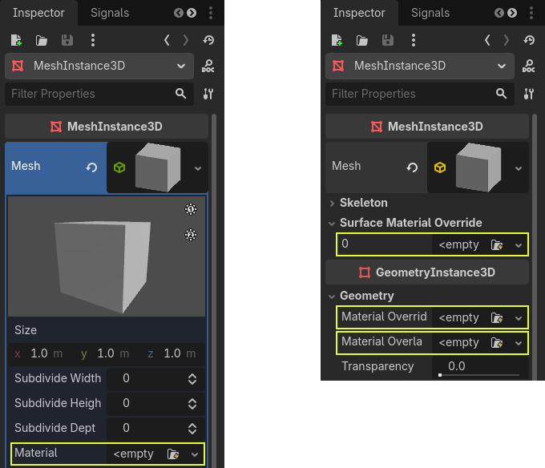
Nếu bạn thêm material vào chính mesh, mỗi khi mesh đó được dùng, nó sẽ có material đó. Nếu bạn thêm material vào node dùng mesh, material chỉ được dùng bởi node đó, và nó cũng ghi đè thuộc tính material của mesh. Nếu material được thêm vào thuộc tính Material Override của node, nó chỉ được dùng bởi node đó. Nó cũng ghi đè thuộc tính material thông thường của node và thuộc tính material của mesh.
Thuộc tính Material Overlay sẽ kết xuất một material đè lên material mà mesh đang dùng. Ví dụ, có thể dùng nó để tạo hiệu ứng khiên trong suốt trên một mesh.
Cài đặt BaseMaterial 3D
StandardMaterial3D có nhiều cài đặt quyết định diện mạo của material. Tất cả đều nằm trong danh mục BaseMaterial3D
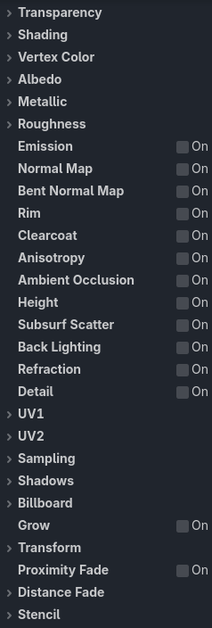
Material ORM gần như giống hệt, chỉ khác một điểm. Thay vì có các cài đặt và texture riêng cho occlusion, roughness và metallic, nó dùng một texture ORM duy nhất. Mỗi kênh màu của texture đó được dùng cho một tham số. Các chương trình như Substance Painter và Armor Paint cho phép bạn xuất theo định dạng này; với hai chương trình này, đó là preset xuất cho Unreal Engine, vốn cũng dùng texture ORM.
Độ trong suốt
Theo mặc định, material trong Godot là đục (opaque). Cách này kết xuất nhanh, nhưng có nghĩa là không thể nhìn xuyên qua material ngay cả khi bạn dùng texture trong suốt trong thuộc tính Albedo > Texture (hoặc đặt Albedo > Color thành màu trong suốt).
Để có thể nhìn xuyên qua material, material cần được đặt là trong suốt. Godot cung cấp một số chế độ trong suốt:
Disabled: Material đục. Đây là chế độ kết xuất nhanh nhất, hỗ trợ tất cả tính năng kết xuất.
Alpha: Material trong suốt. Các vùng bán trong suốt được vẽ với blending. Chế độ này kết xuất chậm, nhưng cho phép trong suốt một phần (còn gọi là translucency). Material dùng alpha blending cũng không thể đổ bóng, và không hiển thị trong phản chiếu không gian màn hình (screen-space reflections).
Alpha phù hợp cho hiệu ứng hạt (particle) và VFX.
Alpha Scissor: Material trong suốt. Các vùng bán trong suốt có độ đục dưới Alpha Scissor Threshold sẽ không được vẽ (trên ngưỡng này, chúng được vẽ như đục). Chế độ này kết xuất nhanh hơn Alpha và không gặp vấn đề sắp xếp độ trong suốt. Nhược điểm là độ trong suốt kiểu "có hoặc không", không thể có giá trị trung gian. Material dùng alpha scissor có thể đổ bóng.
Alpha Scissor lý tưởng cho tán lá và hàng rào, vì chúng có cạnh sắc và cần sắp xếp đúng để trông đẹp.
Alpha Hash: Material trong suốt. Các vùng bán trong suốt được vẽ bằng dithering. Đây cũng là độ trong suốt kiểu "có hoặc không", nhưng dithering giúp thể hiện các vùng đục một phần với độ chính xác hạn chế, tùy thuộc độ phân giải viewport. Material dùng alpha hash có thể đổ bóng.
Alpha Hash phù hợp cho tóc trông chân thực, dù tóc cách điệu có thể hợp với alpha scissor hơn.
Depth Pre-Pass: Chế độ này kết xuất các pixel hoàn toàn đục của đối tượng qua pipeline đục trước, rồi kết xuất phần còn lại với alpha blending. Cách này giúp việc sắp xếp độ trong suốt gần như đúng (dù không hoàn toàn, vì các vùng trong suốt một phần vẫn có thể bị sắp xếp sai). Material dùng depth prepass có thể đổ bóng.
Ghi chú
Godot sẽ tự động buộc material trở thành trong suốt với alpha blending nếu bất kỳ điều kiện nào sau đây được thỏa mãn:
Đặt chế độ trong suốt là Alpha (như mô tả ở đây).
Đặt blend mode khác với Mix mặc định
Bật Refraction, Proximity Fade hoặc Distance Fade.
So sánh giữa độ trong suốt alpha blending (trái) và alpha scissor (phải):
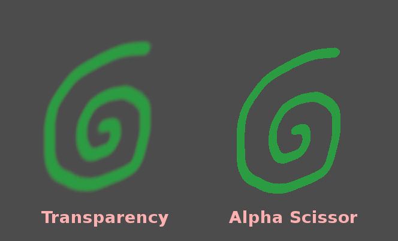
Cảnh báo
Độ trong suốt alpha blending có một số hạn chế:
Material alpha blending kết xuất chậm hơn đáng kể, đặc biệt khi chúng chồng lên nhau.
Material alpha blending có thể gặp vấn đề sắp xếp khi các bề mặt trong suốt chồng lên nhau. Điều này có nghĩa là các bề mặt có thể được kết xuất sai thứ tự, khiến bề mặt phía sau trông như nằm trước những bề mặt thực sự gần camera hơn.
Material alpha blending không đổ bóng, dù chúng có thể nhận bóng.
Material alpha blending không xuất hiện trong bất kỳ phản chiếu nào (ngoại trừ reflection probe).
Phản chiếu không gian màn hình và phản chiếu SDFGI sắc nét không xuất hiện trên material alpha blending. Khi bật SDFGI, phản chiếu thô (rough reflections) được dùng làm phương án dự phòng bất kể độ nhám của material.
Trước khi dùng chế độ trong suốt Alpha, hãy luôn cân nhắc xem có chế độ trong suốt nào khác phù hợp hơn với nhu cầu của bạn không.
Alpha Antialiasing
Ghi chú
Thuộc tính này chỉ hiển thị khi chế độ trong suốt là Alpha Scissor hoặc Alpha Hash.
Dù material alpha scissor và alpha hash kết xuất nhanh hơn material alpha blending, chúng có cạnh sắc giữa vùng đục và vùng trong suốt. Mặc dù có thể dùng các kỹ thuật khử răng cưa dựa trên hậu xử lý như FXAA và TAA, điều này không phải lúc nào cũng mong muốn vì các kỹ thuật đó thường làm kết quả cuối cùng mờ hơn hoặc gây ra hiện tượng bóng ma (ghosting).
Có 3 chế độ alpha antialiasing:
Disabled: Không khử răng cưa alpha. Cạnh của material trong suốt sẽ bị răng cưa trừ khi dùng giải pháp khử răng cưa dựa trên hậu xử lý.
Alpha Edge Blend: Tạo chuyển tiếp mượt giữa vùng đục và vùng trong suốt. Còn được gọi là "alpha to coverage".
Alpha Edge Clip: Tạo chuyển tiếp sắc nét nhưng vẫn được khử răng cưa giữa vùng đục và vùng trong suốt. Còn được gọi là "alpha to coverage + alpha to one".
Khi chế độ khử răng cưa alpha được đặt là Alpha Edge Blend hoặc Alpha Edge Clip, một thuộc tính mới Alpha Antialiasing Edge sẽ hiển thị bên dưới trong inspector. Thuộc tính này điều khiển ngưỡng mà dưới đó pixel sẽ trở nên trong suốt. Dù bạn đã định nghĩa ngưỡng alpha scissor (chỉ khi dùng Alpha Scissor), ngưỡng bổ sung này được dùng để chuyển tiếp mượt giữa pixel đục và pixel trong suốt. Alpha Antialiasing Edge phải luôn được đặt ở giá trị nhỏ hơn hẳn ngưỡng alpha scissor. Giá trị mặc định 0.3 là hợp lý với ngưỡng alpha scissor 0.5, nhưng hãy nhớ điều chỉnh alpha antialiasing edge này khi thay đổi ngưỡng alpha scissor.
Nếu bạn thấy hiệu ứng khử răng cưa chưa đủ hiệu quả, hãy thử tăng Alpha Antialiasing Edge nhưng đảm bảo nó vẫn dưới Alpha Scissor Threshold (nếu material dùng alpha scissor). Ngược lại, nếu bạn thấy diện mạo của texture thay đổi rõ rệt khi camera tiến gần material, hãy thử giảm Alpha Antialiasing Edge.
Quan trọng
Để có kết quả tốt nhất, MSAA 3D nên được đặt ít nhất là 2× trong Project Settings khi dùng khử răng cưa alpha. Lý do là tính năng này dựa vào alpha to coverage, một tính năng do MSAA cung cấp.
Không có MSAA, một mẫu dithering cố định sẽ được áp dụng lên các cạnh của material, vốn không hiệu quả lắm trong việc làm mượt cạnh (dù vẫn có thể giúp một chút).
Blend Mode
Điều khiển blend mode của material. Hãy nhớ rằng bất kỳ chế độ nào khác Mix đều buộc đối tượng đi qua pipeline trong suốt.
Mix: Blend mode mặc định, alpha điều khiển mức độ hiển thị của đối tượng.
Add: Màu cuối cùng của đối tượng được cộng vào màu của màn hình, phù hợp cho lóa sáng (flare) hoặc một số hiệu ứng kiểu lửa.
Subtract: Màu cuối cùng của đối tượng được trừ khỏi màu của màn hình.
Multiply: Màu cuối cùng của đối tượng được nhân với màu của màn hình.
Premultiplied Alpha: Màu của đối tượng được giả định là đã được nhân sẵn với alpha. Chế độ này hoạt động như Add khi alpha là
0.0(hoàn toàn trong suốt) và như Mix khi alpha là1.0(đục).
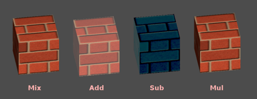
Cull Mode
Xác định mặt nào của đối tượng không được vẽ khi kết xuất mặt sau:
Back: Mặt sau của đối tượng bị loại bỏ (cull) khi không nhìn thấy (mặc định).
Front: Mặt trước của đối tượng bị loại bỏ khi không nhìn thấy.
Disabled: Dùng cho đối tượng hai mặt (không thực hiện culling).
Ghi chú
Theo mặc định, Blender tắt backface culling trên material và sẽ xuất material sao cho khớp với cách chúng kết xuất trong Blender. Điều này có nghĩa là material trong Godot sẽ có cull mode là Disabled. Việc này có thể làm giảm hiệu năng vì mặt sau vẫn được kết xuất, ngay cả khi chúng bị các mặt khác che khuất. Để khắc phục, hãy bật Backface Culling trong tab Materials của Blender, rồi xuất lại scene sang glTF.
Depth Draw Mode
Chỉ định khi nào phải thực hiện kết xuất độ sâu.
Opaque Only (mặc định): Độ sâu chỉ được vẽ cho đối tượng đục.
Always: Độ sâu được vẽ cho cả đối tượng đục và trong suốt.
Never: Không vẽ độ sâu (đừng nhầm với tùy chọn No Depth Test bên dưới).
Depth Pre-Pass: Với đối tượng trong suốt, một lượt vẽ đục được thực hiện trước với các phần đục, rồi phần trong suốt được vẽ đè lên. Hãy dùng tùy chọn này với cỏ hoặc tán lá cây trong suốt.
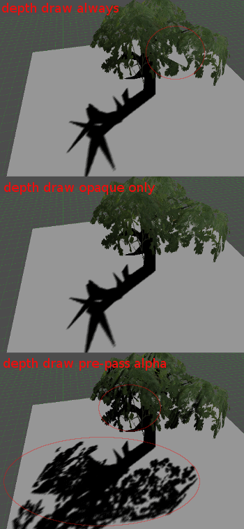
No Depth Test
Để đối tượng ở gần hiển thị đè lên đối tượng ở xa, kiểm tra độ sâu (depth test) sẽ được thực hiện. Tắt nó đi sẽ khiến đối tượng hiển thị đè lên (hoặc nằm dưới) mọi thứ khác.
Tắt tùy chọn này hợp lý nhất khi vẽ các chỉ báo trong không gian thế giới, và hoạt động rất tốt với thuộc tính Render Priority của Material (xem cuối trang này).
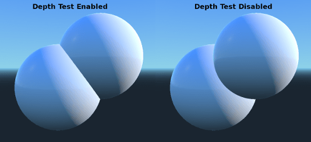
Depth Test
Có thể dùng tùy chọn này để đảo ngược kiểm tra độ sâu tiêu chuẩn. Khi đặt là Inverted, đối tượng chỉ hiển thị khi bị che khuất, và bị ẩn trong các trường hợp còn lại.
Tùy chọn này không có tác dụng nếu No Depth Test được bật.
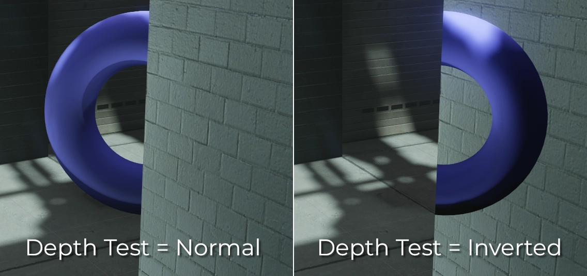
Đổ bóng (shading)
Chế độ shading
Material hỗ trợ ba chế độ shading: Per-Pixel, Per-Vertex và Unshaded.
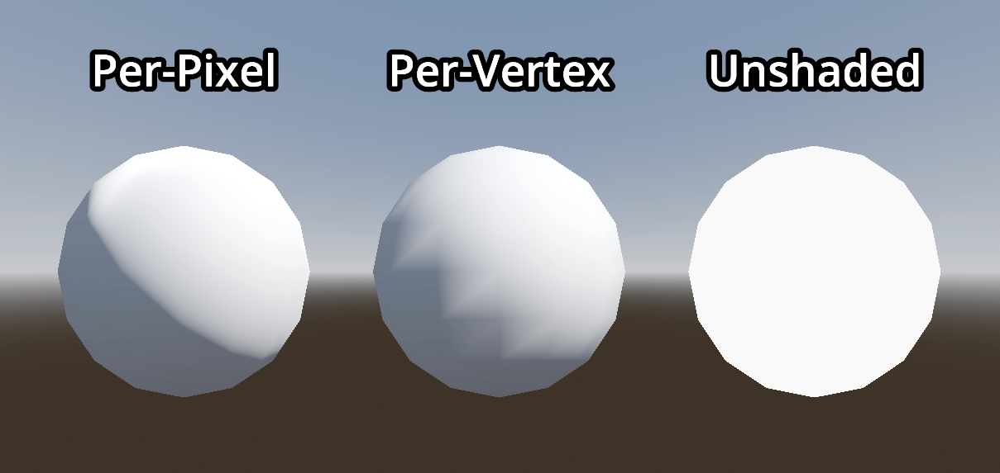
Chế độ shading Per-Pixel tính chiếu sáng cho từng pixel, và phù hợp với hầu hết trường hợp. Tuy nhiên, trong một số trường hợp bạn có thể muốn tăng hiệu năng bằng cách dùng chế độ shading khác.
Chế độ shading Per-Vertex, thường gọi là "vertex shading" hoặc "vertex lighting", thay vào đó tính chiếu sáng một lần cho mỗi đỉnh, rồi nội suy kết quả giữa các pixel.
Trên thiết bị cấp thấp hoặc di động, dùng chiếu sáng theo đỉnh có thể tăng hiệu năng kết xuất đáng kể. Khi kết xuất nhiều lớp trong suốt, chẳng hạn khi dùng hệ thống hạt, dùng shading theo đỉnh có thể cải thiện hiệu năng, đặc biệt khi camera ở gần các hạt.
Bạn cũng có thể dùng chiếu sáng theo đỉnh để tạo phong cách retro.
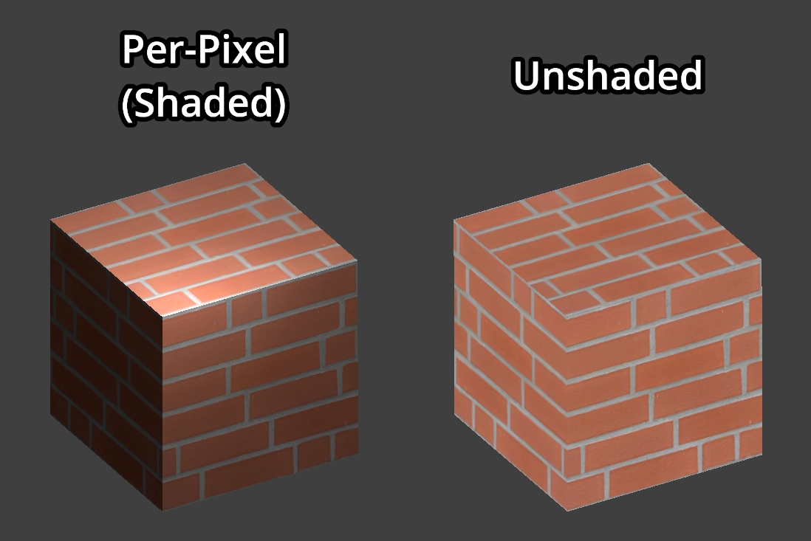
Chế độ shading Unshaded hoàn toàn không tính chiếu sáng. Thay vào đó, màu Albedo được xuất trực tiếp. Đèn sẽ hoàn toàn không ảnh hưởng đến material, và material unshaded thường trông sáng hơn đáng kể so với material có shading.
Kết xuất unshaded hữu ích cho một số hiệu ứng hình ảnh cụ thể. Nếu cần hiệu năng tối đa, nó cũng có thể dùng cho hạt, hoặc trên thiết bị cấp thấp hay di động.
Diffuse Mode
Chỉ định thuật toán dùng cho sự tán xạ khuếch tán của ánh sáng khi chiếu vào đối tượng. Mặc định là Burley. Các chế độ khác cũng có sẵn:
Burley: Chế độ mặc định, thuật toán diffuse Disney Principled PBS gốc.
Lambert: Không bị ảnh hưởng bởi độ nhám.
Lambert Wrap: Mở rộng Lambert để bao phủ hơn 90 độ khi độ nhám tăng. Rất phù hợp cho tóc và mô phỏng tán xạ dưới bề mặt (subsurface scattering) giá rẻ. Cách triển khai này bảo toàn năng lượng.
Toon: Tạo vết cắt chiếu sáng sắc nét, với độ mượt chịu ảnh hưởng của độ nhám. Bạn nên tắt đóng góp của bầu trời (sky contribution) trong cài đặt ánh sáng môi trường (ambient light) của environment, hoặc tắt ambient light trong StandardMaterial3D để đạt hiệu quả tốt hơn.
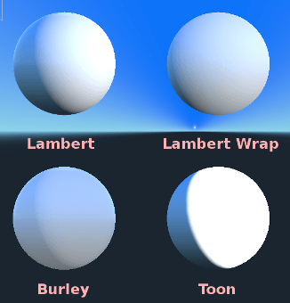
Specular Mode
Chỉ định cách kết xuất vệt phản quang (specular blob). Vệt phản quang thể hiện hình dạng của nguồn sáng được phản chiếu trên đối tượng.
SchlickGGX: Loại vệt phổ biến nhất được các engine 3D PBR sử dụng ngày nay.
Toon: Tạo vệt kiểu toon, thay đổi kích thước tùy theo độ nhám.
Disabled: Đôi khi vệt phản quang chỉ gây vướng. Biến đi nào!
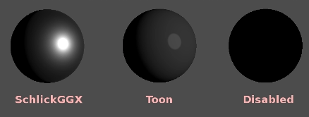
Disable Ambient Light
Khiến đối tượng không nhận bất kỳ loại ánh sáng môi trường nào mà lẽ ra sẽ chiếu sáng nó.
Disable Fog
Khiến đối tượng không bị ảnh hưởng bởi sương mù dựa trên độ sâu hoặc sương mù thể tích (volumetric fog). Điều này hữu ích cho hạt hoặc các material blending kiểu cộng (additive) khác, vốn nếu không sẽ làm lộ hình dạng của mesh (ngay cả ở những chỗ lẽ ra không thấy được nếu không có sương mù).
Disable Specular Occlusion
Khiến phản chiếu của đối tượng không bị giảm ở những chỗ thông thường sẽ bị che khuất.
Vertex Color
Cài đặt này cho phép chọn cách xử lý mặc định với màu đỉnh đến từ ứng dụng dựng hình 3D của bạn. Theo mặc định, chúng bị bỏ qua.
Use as Albedo
Chọn tùy chọn này nghĩa là màu đỉnh được dùng làm màu albedo.
Is sRGB
Hầu hết phần mềm dựng hình 3D thường xuất màu đỉnh ở dạng sRGB, vì vậy bật tùy chọn này sẽ giúp chúng hiển thị đúng.
Albedo
Albedo là màu cơ sở của material, mà mọi cài đặt khác đều tác động lên. Khi đặt là Unshaded, đây là màu duy nhất được hiển thị. Trong các phiên bản Godot trước, kênh này có tên là Diffuse. Việc đổi tên chủ yếu là vì trong PBR (Physically Based Rendering - kết xuất dựa trên vật lý), màu này ảnh hưởng đến nhiều phép tính hơn chứ không chỉ đường chiếu sáng khuếch tán.
Màu và texture albedo có thể dùng cùng nhau vì chúng được nhân với nhau.
Kênh alpha trong màu và texture albedo cũng được dùng cho độ trong suốt của đối tượng. Nếu bạn dùng màu hoặc texture có kênh alpha, hãy đảm bảo bật độ trong suốt hoặc alpha scissoring để nó hoạt động.
Metallic
Godot dùng mô hình metallic thay vì các mô hình cạnh tranh khác vì tính đơn giản của nó. Tham số này xác định mức độ phản chiếu của material. Càng phản chiếu nhiều, ánh sáng khuếch tán/môi trường càng ít ảnh hưởng đến material và càng nhiều ánh sáng bị phản xạ. Mô hình này được gọi là "bảo toàn năng lượng" (energy-conserving).
Tham số Specular là mức phản chiếu tổng quát (khác với Metallic, tham số này không bảo toàn năng lượng, nên hãy để nó ở 0.5 và đừng động vào trừ khi cần).
Độ phản chiếu nội tại tối thiểu là 0.04, nên không thể làm một material hoàn toàn không phản chiếu, giống như ngoài đời thực.
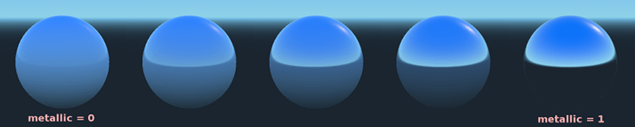
Roughness
Roughness (độ nhám) ảnh hưởng đến cách phản chiếu diễn ra. Giá trị 0 biến nó thành một tấm gương hoàn hảo, còn giá trị 1 làm mờ hoàn toàn phản chiếu (mô phỏng vi bề mặt tự nhiên). Hầu hết các loại material phổ biến đều có thể đạt được với tổ hợp Metallic và Roughness phù hợp.
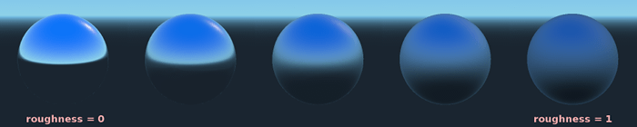
Emission
Emission chỉ định lượng ánh sáng mà material phát ra (lưu ý rằng nó không chiếu sáng hình học xung quanh trừ khi dùng VoxelGI hoặc SDFGI). Giá trị này được cộng vào ảnh cuối cùng và không bị ảnh hưởng bởi các nguồn sáng khác trong scene.
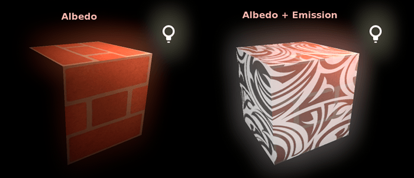
Normal map
Normal mapping cho phép bạn đặt một texture thể hiện chi tiết hình dạng tinh tế hơn. Nó không thay đổi hình học, chỉ thay đổi góc tới của ánh sáng. Trong Godot, chỉ kênh đỏ và kênh xanh lá của normal map được dùng, để nén tốt hơn và tương thích rộng hơn.
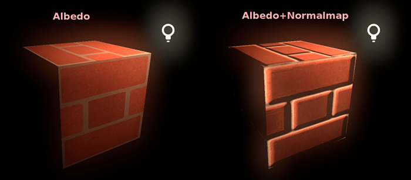
Ghi chú
Godot yêu cầu normal map dùng tọa độ X+, Y+ và Z+, gọi là kiểu OpenGL. Nếu bạn import một material được làm cho engine khác, nó có thể theo kiểu DirectX; khi đó normal map cần được chuyển đổi để lật trục Y.
Bạn có thể tìm thêm thông tin về normal map (bao gồm bảng thứ tự tọa độ của các engine phổ biến) tại đây.
Bent normal map
Bent normal map mô tả hướng trung bình của ánh sáng môi trường. Khác với normal map thông thường, nó được dùng để cải thiện cách material phản ứng với ánh sáng thay vì thêm chi tiết bề mặt.
Điều này đạt được theo hai cách:
Chiếu sáng khuếch tán gián tiếp được làm khớp sát hơn với chiếu sáng toàn cục (global illumination).
Nếu bật specular occlusion, nó sẽ được tính bằng bent normal và ambient occlusion thay vì chỉ từ ánh sáng môi trường. Điều này bao gồm ambient occlusion không gian màn hình (SSAO) và các nguồn ambient occlusion khác.
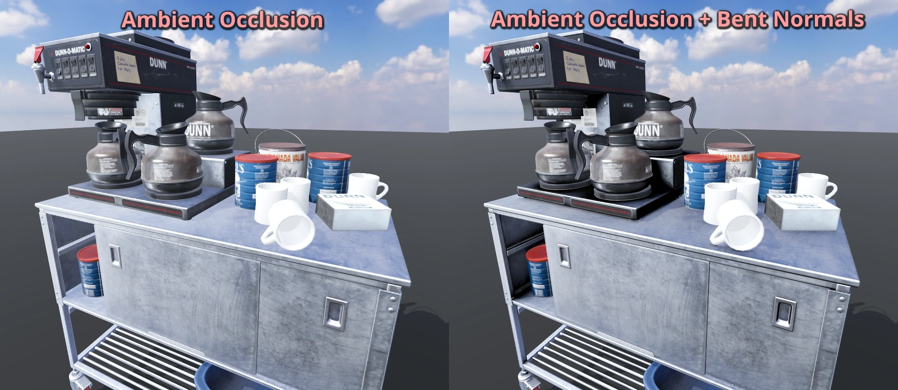
Godot chỉ dùng kênh đỏ và kênh xanh lá của bent normal map để nén tốt hơn và tương thích rộng hơn.
Khi tạo bent normal map, cần ba điều để nó hoạt động đúng trong Godot:
Phải dùng phân bố cosine cho các tia khi bake.
Texture phải được tạo trong không gian tiếp tuyến (tangent space).
Bent normal map cần dùng tọa độ X+, Y+ và Z+, gọi là kiểu OpenGL. Nếu bạn import một material được làm cho engine khác, nó có thể theo kiểu DirectX; khi đó bent normal map cần được chuyển đổi để lật trục Y. Bạn có thể làm điều này bằng cách đặt kênh xanh lá trong mục Channel Remap thành Inverted Green trong import dock.
Ghi chú
Bent normal map khác với normal map thông thường. Hai loại này không thể thay thế cho nhau.
Rim
Một số loại vải có lớp lông tơ nhỏ khiến ánh sáng tán xạ xung quanh. Godot mô phỏng điều này bằng tham số Rim. Khác với các cách triển khai rim lighting khác chỉ dùng kênh emission, cách này thực sự tính đến ánh sáng (không có ánh sáng thì không có rim). Nhờ đó hiệu ứng trông thuyết phục hơn đáng kể.
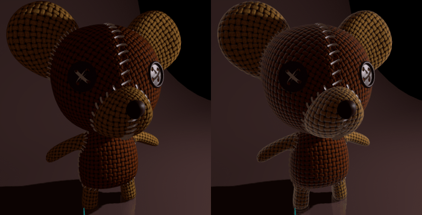
Kích thước rim phụ thuộc vào độ nhám, và có một tham số đặc biệt để chỉ định cách tô màu cho nó. Nếu Tint là 0, màu của ánh sáng được dùng cho rim. Nếu Tint là 1, albedo của material được dùng. Dùng các giá trị trung gian thường cho kết quả tốt nhất.
Clearcoat
Tham số Clearcoat được dùng để thêm một lượt phủ trong suốt thứ hai cho material. Điều này phổ biến ở sơn xe hơi và đồ chơi. Trên thực tế, đó là một vệt phản quang nhỏ hơn được thêm lên trên material hiện có.
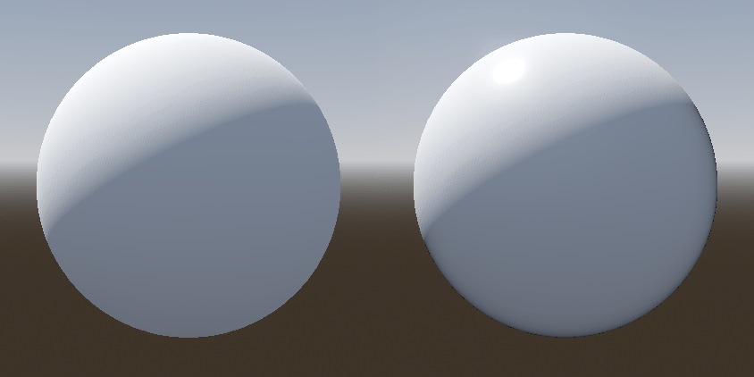
Anisotropy
Tùy chọn này thay đổi hình dạng của vệt phản quang và căn nó theo không gian tiếp tuyến. Anisotropy (bất đẳng hướng) thường được dùng cho tóc, hoặc để làm các material như nhôm xước trông chân thực hơn. Nó đặc biệt hiệu quả khi kết hợp với flowmap.
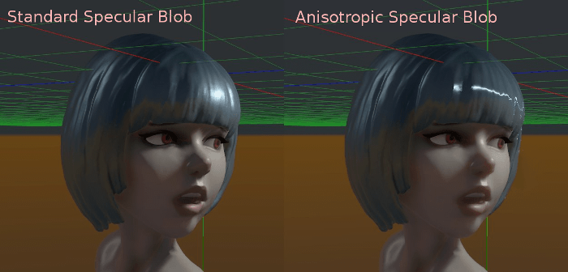
Ambient Occlusion
Bạn có thể chỉ định một ambient occlusion map đã bake. Map này ảnh hưởng đến lượng ánh sáng môi trường chiếu tới từng bề mặt của đối tượng (theo mặc định nó không ảnh hưởng đến ánh sáng trực tiếp). Dù có thể dùng Screen-Space Ambient Occlusion (SSAO) để tạo ambient occlusion, không gì vượt qua được chất lượng của một AO map được bake tốt. Bạn nên bake ambient occlusion bất cứ khi nào có thể.
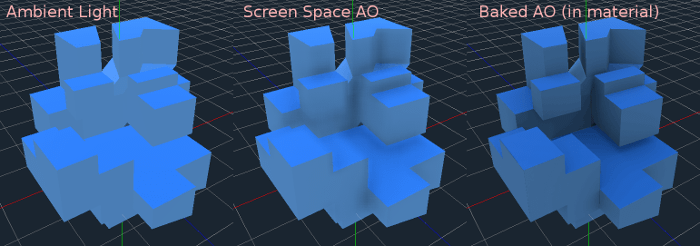
Height
Đặt height map cho material sẽ tạo ra một phép tìm kiếm ray-marching để mô phỏng độ dịch chuyển đúng của các hốc lõm theo hướng nhìn. Cách này chỉ tạo ảo giác về chiều sâu, không thêm hình học thật — với hình dạng height map dùng cho va chạm vật lý (như địa hình), hãy xem class_HeightMapShape3D. Nó có thể không hoạt động với đối tượng phức tạp, nhưng tạo được hiệu ứng chiều sâu chân thực cho texture. Để có kết quả tốt nhất, Height nên được dùng cùng với normal mapping.
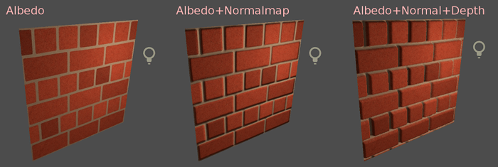
Subsurface Scattering
Tính năng này chỉ có trong renderer Forward+, không có trong renderer Mobile hoặc Compatibility.
Hiệu ứng này mô phỏng ánh sáng xuyên qua bề mặt đối tượng, bị tán xạ rồi thoát ra ngoài. Nó hữu ích để tạo da, đá cẩm thạch, chất lỏng có màu, v.v. trông chân thực.
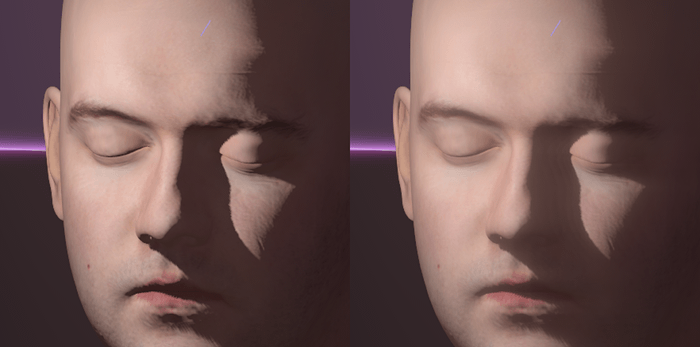
Back Lighting
Tùy chọn này điều khiển lượng ánh sáng từ mặt được chiếu sáng (hướng về nguồn sáng) truyền sang mặt tối (phía đối diện nguồn sáng). Nó hoạt động tốt với các đối tượng mỏng như lá cây, cỏ, tai người, v.v.
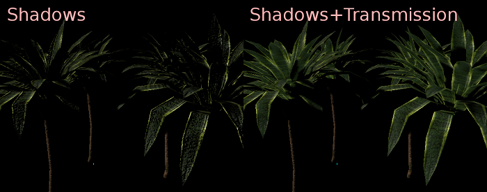
Refraction
Khi bật khúc xạ (refraction), Godot cố gắng lấy thông tin từ phía sau đối tượng đang được kết xuất. Điều này cho phép làm méo độ trong suốt tương tự như hiện tượng khúc xạ ngoài đời thực.
Hãy nhớ dùng texture albedo trong suốt (hoặc giảm kênh alpha của màu albedo) để khúc xạ hiển thị, vì khúc xạ dựa vào độ trong suốt để có hiệu ứng nhìn thấy được.
Khúc xạ cũng tính đến độ nhám của material. Giá trị độ nhám cao hơn sẽ làm các đối tượng phía sau vùng khúc xạ trông mờ hơn, mô phỏng hành vi ngoài đời thực. Nếu bạn không nhìn thấy phía sau đối tượng khi đã bật khúc xạ và giảm độ trong suốt albedo, hãy giảm giá trị Roughness của material.
Bạn có thể tùy chọn chỉ định một normal map trong thuộc tính Refraction Texture để làm méo hướng khúc xạ theo từng pixel.
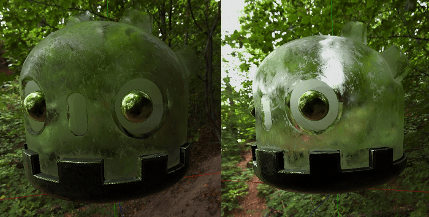
Ghi chú
Khúc xạ được triển khai như một hiệu ứng không gian màn hình và buộc material phải trong suốt. Điều này giúp hiệu ứng tương đối nhanh, nhưng dẫn đến một số hạn chế:
Có thể xảy ra vấn đề sắp xếp độ trong suốt.
Material khúc xạ không thể khúc xạ lên chính nó, hoặc lên các material trong suốt khác. Material khúc xạ nằm sau một material trong suốt khác sẽ không hiển thị.
Đối tượng nằm ngoài màn hình không thể xuất hiện trong vùng khúc xạ. Điều này dễ thấy nhất khi cường độ khúc xạ cao.
Material đục nằm trước material khúc xạ sẽ có các cạnh trông như bị "khúc xạ", dù lẽ ra không nên như vậy.
Detail
Godot cho phép dùng albedo và normal map phụ để tạo detail texture, có thể được hòa trộn theo nhiều cách. Kết hợp điều này với UV phụ hoặc chế độ triplanar, bạn có thể tạo ra nhiều texture thú vị.
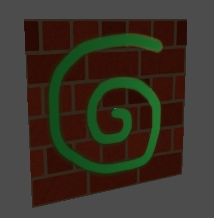
Có một số cài đặt điều khiển cách dùng detail.
Mask: Detail mask là một ảnh đen trắng dùng để điều khiển vị trí diễn ra việc hòa trộn trên texture. Màu trắng dành cho detail texture, màu đen dành cho texture thông thường của material, các sắc độ xám khác nhau dành cho việc hòa trộn một phần giữa texture của material và detail texture.
Blend Mode: Bốn chế độ này điều khiển cách các texture được hòa trộn với nhau.
Mix: Kết hợp giá trị pixel của cả hai texture. Ở màu đen, chỉ hiển thị texture của material; ở màu trắng, chỉ hiển thị detail texture. Các giá trị xám tạo ra sự hòa trộn mượt giữa hai texture.
Add: Cộng giá trị pixel của texture này với texture kia. Khác với chế độ mix, cả hai texture được trộn hoàn toàn ở các phần trắng của mask chứ không phải ở phần xám. Texture gốc gần như không thay đổi ở phần đen
Sub: Trừ giá trị pixel của texture này cho texture kia. Texture thứ hai bị trừ hoàn toàn ở các phần trắng của mask, chỉ bị trừ một chút ở phần đen, còn phần xám có mức trừ khác nhau tùy vào texture cụ thể.
Mul: Nhân các giá trị kênh RGB của mỗi pixel ở texture trên với giá trị của pixel tương ứng ở texture dưới.
Albedo: Đây là nơi bạn đặt texture albedo muốn hòa trộn. Nếu ô này trống, nó sẽ mặc định được hiểu là màu trắng.
Normal: Đây là nơi bạn đặt normal texture muốn hòa trộn. Nếu ô này trống, nó sẽ được hiểu là một normal map phẳng. Bạn vẫn có thể dùng nó ngay cả khi material chưa bật normal map.
UV1 và UV2
Godot hỗ trợ hai kênh UV cho mỗi material. UV phụ thường hữu ích cho ambient occlusion hoặc emission (ánh sáng bake). UV có thể được co giãn và dịch chuyển, rất hữu ích khi dùng texture lặp lại.
Triplanar Mapping
Triplanar mapping được hỗ trợ cho cả UV1 và UV2. Đây là một cách khác để lấy tọa độ texture, đôi khi được gọi là "Autotexture". Texture được lấy mẫu theo X, Y và Z rồi hòa trộn theo pháp tuyến. Triplanar mapping có thể được thực hiện trong không gian thế giới hoặc không gian đối tượng.
Trong ảnh dưới đây, bạn có thể thấy tất cả các primitive dùng chung một material với world triplanar, nên texture gạch liền mạch giữa chúng.
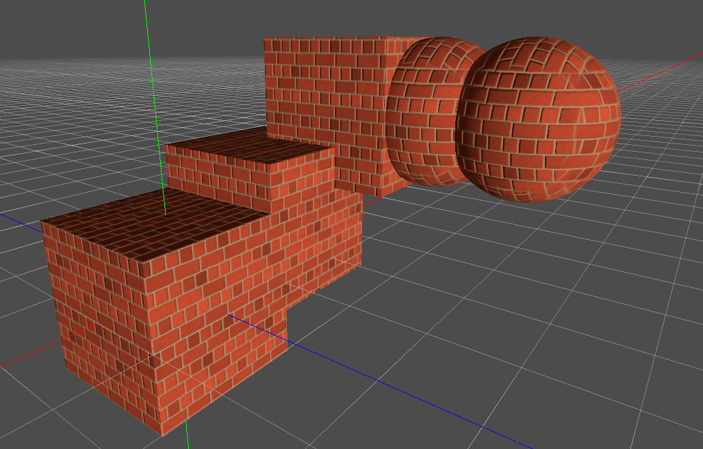
World Triplanar
Khi dùng triplanar mapping, nó được tính trong không gian cục bộ của đối tượng. Tùy chọn này khiến nó dùng không gian thế giới thay thế.
Sampling
Filter
Phương pháp lọc cho các texture mà material sử dụng. Xem trang này để có danh sách đầy đủ các tùy chọn và mô tả của chúng.
Repeat
texture mà material sử dụng có lặp lại hay không, và lặp lại như thế nào. Xem trang này để có danh sách đầy đủ các tùy chọn và mô tả của chúng.
Bóng đổ
Disable Receive Shadows
Khiến đối tượng không nhận bất kỳ loại bóng nào mà lẽ ra sẽ đổ lên nó.
Shadow to Opacity
Chiếu sáng thay đổi alpha để vùng có bóng trở nên đục và vùng không có bóng trở nên trong suốt. Hữu ích để phủ bóng lên luồng hình ảnh camera trong AR.
Billboard
Billboard Mode
Bật chế độ billboard khi vẽ material. Tùy chọn này điều khiển cách đối tượng hướng về camera:
Disabled: Tắt chế độ billboard.
Enabled: Bật chế độ billboard. Trục -Z của đối tượng sẽ luôn hướng về mặt phẳng nhìn của camera.
Y-Billboard: Trục X của đối tượng sẽ luôn được căn theo mặt phẳng nhìn của camera.
Particle Billboard: Phù hợp nhất cho hệ thống hạt, vì nó cho phép chỉ định hoạt ảnh flipbook.
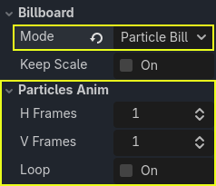
Mục Particles Anim chỉ hiển thị khi chế độ billboard là Particle Billboard.
Billboard Keep Scale
Cho phép co giãn mesh trong chế độ billboard.
Grow
Đẩy các đỉnh của đối tượng ra theo hướng pháp tuyến của chúng:
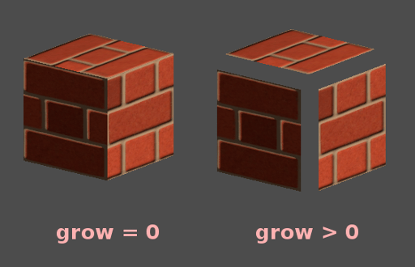
Tính năng này thường được dùng để tạo đường viền (outline) giá rẻ. Hãy thêm một lượt material thứ hai, đặt nó màu đen và unshaded, đảo ngược culling (Cull Front), rồi thêm một chút grow:
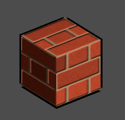
Ghi chú
Để Grow hoạt động như mong đợi, mesh phải có các mặt liền nhau với đỉnh dùng chung, tức "smooth shading". Nếu mesh có các mặt rời nhau với đỉnh riêng biệt, tức "flat shading", mesh sẽ trông như có khe hở khi dùng Grow.
Lưu ý rằng từ Godot 4.5 trở đi, đường viền dựa trên stencil buffer đã có sẵn thông qua chế độ stencil Outline. Có thể dùng nó thay thế cho Grow để tạo đường viền.
Transform
Fixed Size
Tùy chọn này khiến đối tượng được kết xuất ở cùng một kích thước bất kể khoảng cách. Nó chủ yếu hữu ích cho các chỉ báo (không kiểm tra độ sâu và render priority cao) và một số loại billboard.
Use Point Size
Tùy chọn này chỉ có tác dụng khi hình học được kết xuất được tạo từ các điểm (thông thường nó được tạo từ tam giác khi import từ phần mềm dựng hình 3D). Khi đó, các điểm này có thể được thay đổi kích thước (xem bên dưới).
Point Size
Khi vẽ điểm, chỉ định kích thước điểm tính bằng pixel.
Use Particle Trails
Chỉ khả dụng với renderer Forward+ và Mobile, không có trong renderer Compatibility.
Nếu là true, bật các phần của shader cần thiết để vệt (trail) của GPUParticles3D hoạt động. Tùy chọn này cũng yêu cầu dùng mesh có skinning phù hợp, như RibbonTrailMesh hoặc TubeTrailMesh. Bật tính năng này cho material không dùng trong mesh của GPUParticles3D sẽ làm hỏng việc kết xuất material.
Use Z Clip Scale
Co giãn đối tượng đang được kết xuất về phía camera để tránh xuyên vào các vật như tường. Tùy chọn này dành cho các đối tượng cố định so với camera như tay người chơi, công cụ, v.v. Chiếu sáng và bóng đổ vẫn hoạt động đúng khi điều chỉnh cài đặt này, nhưng các hiệu ứng không gian màn hình như SSAO và SSR có thể bị lỗi ở tỉ lệ thấp. Vì vậy, hãy cố giữ cài đặt này càng gần 1.0 càng tốt.
Use FOV Override
Ghi đè góc trường nhìn (field of view) của Camera3D (tính bằng độ).
Ghi chú
Tùy chọn này hoạt động như thể trường nhìn được đặt trên một Camera3D có Camera3D.keep_aspect được đặt là Camera3D.KEEP_HEIGHT. Ngoài ra, nó có thể trông không đúng trên camera không phải phối cảnh (non-perspective), nơi cài đặt trường nhìn bị bỏ qua.
Proximity Fade và Distance Fade
Godot cho phép material mờ dần theo khoảng cách gần với nhau cũng như theo khoảng cách tới người xem. Proximity fade hữu ích cho các hiệu ứng như soft particle hoặc một khối nước hòa trộn mượt với bờ.
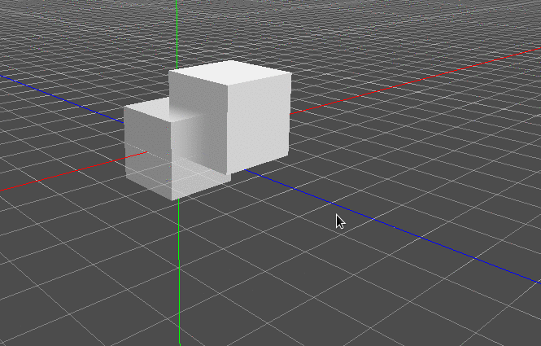
Distance fade hữu ích cho các tia sáng (light shaft) hoặc các chỉ báo chỉ xuất hiện sau một khoảng cách nhất định.
Lưu ý rằng bật proximity fade hoặc distance fade với chế độ Pixel Alpha sẽ bật alpha blending. Alpha blending tốn GPU hơn và có thể gây ra vấn đề sắp xếp độ trong suốt. Alpha blending cũng vô hiệu hóa nhiều tính năng của material, chẳng hạn như khả năng đổ bóng.
Ghi chú
Để ẩn một nhân vật khi họ đến quá gần camera, hãy cân nhắc dùng Pixel Dither hoặc tốt hơn là Object Dither (còn nhanh hơn cả Pixel Dither).
Chế độ Pixel Alpha: Độ trong suốt thực sự của từng pixel trên đối tượng thay đổi theo khoảng cách tới camera. Đây là chế độ cho hiệu ứng tốt nhất, nhưng buộc material đi vào pipeline trong suốt (dẫn đến, ví dụ, không có bóng đổ).
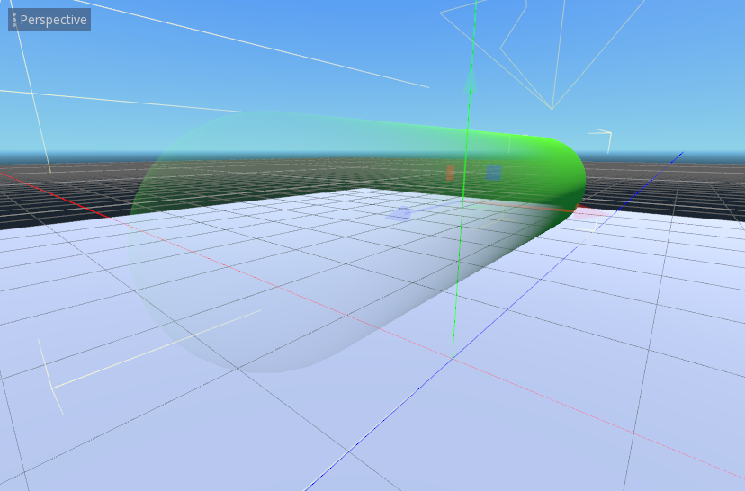
Chế độ Pixel Dither: Chế độ này xấp xỉ độ trong suốt bằng cách chỉ kết xuất một phần các pixel.
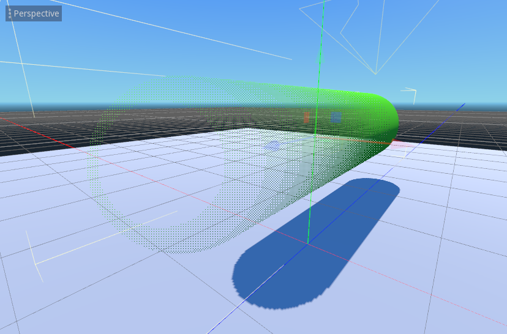
Chế độ Object Dither: Giống chế độ trước, nhưng độ trong suốt được tính toán là như nhau trên toàn bộ bề mặt của đối tượng.
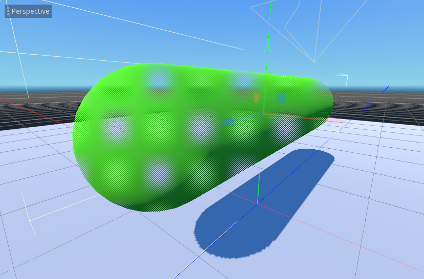
Stencil
Kể từ Godot 4.5, Godot cho phép material sử dụng stencil buffer. Tính năng này thường được dùng để tạo viền (outline) và hiệu ứng X-ray, rất hữu ích để làm nổi bật đối tượng, đặc biệt là phía sau tường.
Các chế độ Outline và X-Ray gán một stencil material được cấu hình sẵn vào thuộc tính Next Pass của material. Chế độ Custom có thể được dùng cho các hiệu ứng nâng cao.
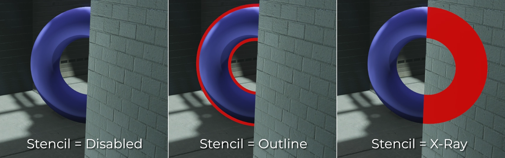
Material ghi vào stencil buffer luôn được vẽ trong pass trong suốt, nên chúng chịu các giới hạn về độ trong suốt thông thường.
Ghi chú
Giống như với thuộc tính Grow, để viền stencil hoạt động như mong đợi, mesh phải có các mặt liên kết với đỉnh dùng chung, hay "smooth shading". Nếu mesh có các mặt rời nhau với đỉnh riêng biệt, hay "flat shading", mesh sẽ có vẻ bị hở khi dùng viền stencil.
Viền stencil được kết xuất tương tự thuộc tính Grow, nhưng sẽ không trông giống hệt nhau trong mọi trường hợp, đặc biệt là khi có giao cắt với các bề mặt đục.
Material Settings
Độ ưu tiên kết xuất
Thứ tự kết xuất của các đối tượng có thể được thay đổi, dù điều này chủ yếu hữu ích cho các đối tượng trong suốt (hoặc các đối tượng đục có vẽ độ sâu nhưng không vẽ màu, chẳng hạn như vết nứt trên sàn).
Các đối tượng được sắp xếp theo hàng đợi đục/trong suốt, sau đó theo render_priority, với độ ưu tiên cao hơn được vẽ sau. Các đối tượng trong suốt cũng được sắp xếp theo độ sâu.
Kiểm tra độ sâu (depth test) được ưu tiên hơn độ ưu tiên. Chỉ riêng độ ưu tiên không thể buộc các đối tượng đục được vẽ đè lên nhau.
Next Pass
Đặt next_pass trên một material sẽ khiến đối tượng được kết xuất thêm một lần nữa với material tiếp theo đó.
Các material được sắp xếp theo hàng đợi đục/trong suốt, sau đó theo render_priority, với độ ưu tiên cao hơn được vẽ sau.
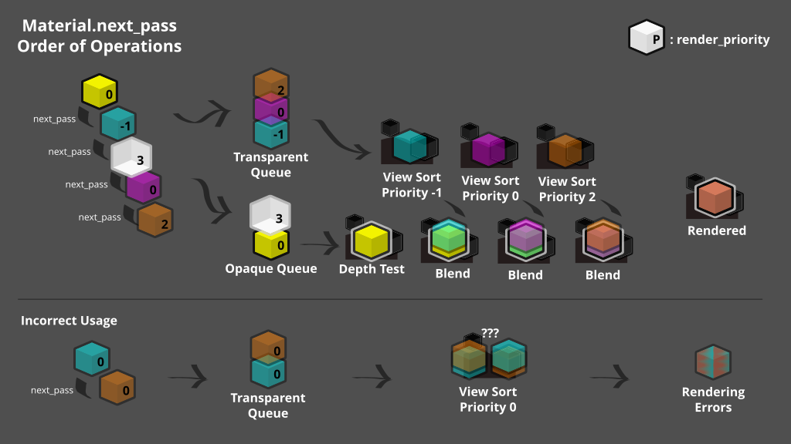
Kiểm tra độ sâu sẽ cho kết quả bằng nhau giữa hai material trừ khi dùng cài đặt grow hoặc các phép biến đổi đỉnh khác. Nhiều pass trong suốt nên dùng render_priority để đảm bảo thứ tự đúng.